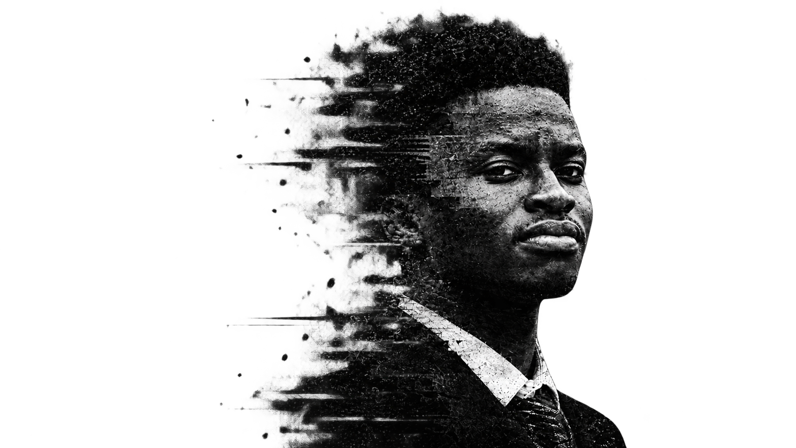
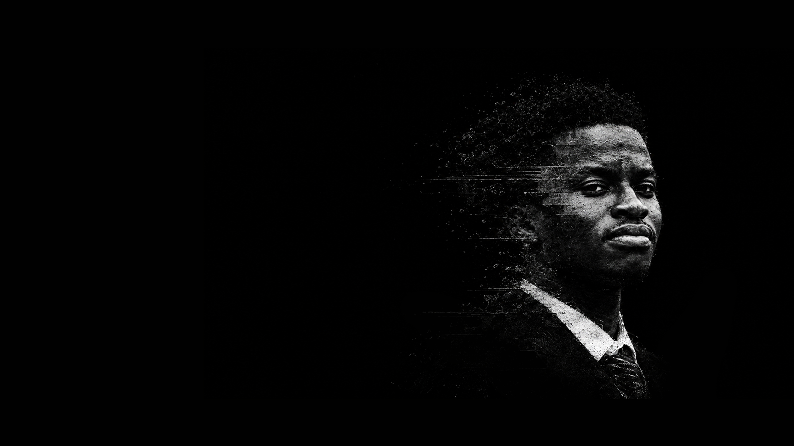

Brand identity
Positioning, mark, type system, colour and guidelines a team can apply without me in the room.


Oladoyin Abdulbasit — Bixels
A personal brand for a designer who builds complete systems — from mark to motion to product. One syllable that contains the entire practice.
Selected Work

Self-initiated institutional fintech brand — identity, motion, environment and product.
Brand · Motion · 2025
Architecture studio's site rebuilt from an image grid into a navigable fifteen-project archive.
Web · WordPress · 2026
Infrastructure company identity applied across product, merch, web and environment.
Brand · Digital · 2026
Japanese-language voice-first assistant for strawberry growers — twenty screens.
Product · 2026Most designers stop at the logo, or start at the interface. Working across both means the brand and the product arrive looking like the same thing — because they came from the same person.
Based in Akure, Nigeria, working with clients globally in fintech, AI, commerce, beauty and agriculture. Fixed scope, fixed price, agreed before anything starts.
How I work
Positioning, mark, type system, colour and guidelines a team can apply without me in the room.
Interfaces designed in every real state — not only the version that photographs well.
Custom themes hand-built. No page builders, no template licences to renew.
What clients say
"Add a client testimonial here — two sentences on what the problem was and what working with you was like."— Name, Role, Company